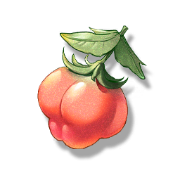

Climbing Fig
Resources

Material for cooking.
A shrub that can climb the exterior walls of buildings and grow upwards, the fruit of the Climbing Fig can be used to make syrup.
When moving, the people of Jinzhou will break off a section of the Climbing Fig vine from the old house and bring it to the new house to plant.